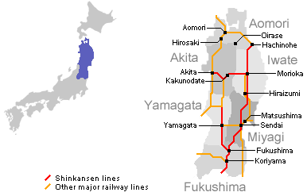

Location
Map of Japan
Onogawa-Onsen is in Yonezawa-City, Yamagata-Prefecture
that is in the northern area of the main island(Honshu)
of Japan.

Map of Onogawa Onsen
Onogawa-Onsen is in a small town with beautiful nature.
You can take a walk along the stream going through the town,
enjoying birds'singing.
Access
- To Onogawa onsen
From Yonezawa Station: 20 minutes by car - To Yonezawa Station
From Tokyo: 2hours & 10minutes by Yamagata Shinkansen - To Yonezawa
From Kitakata: 40minutes by car